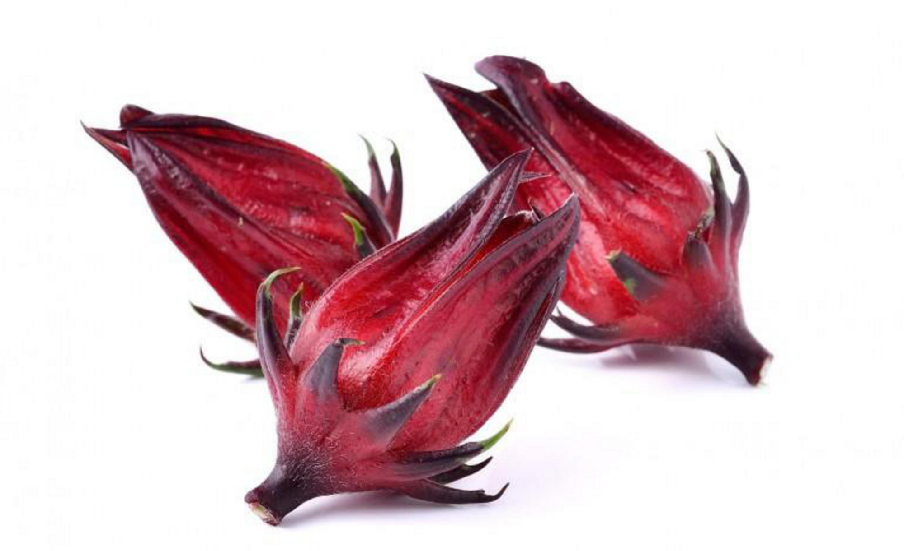
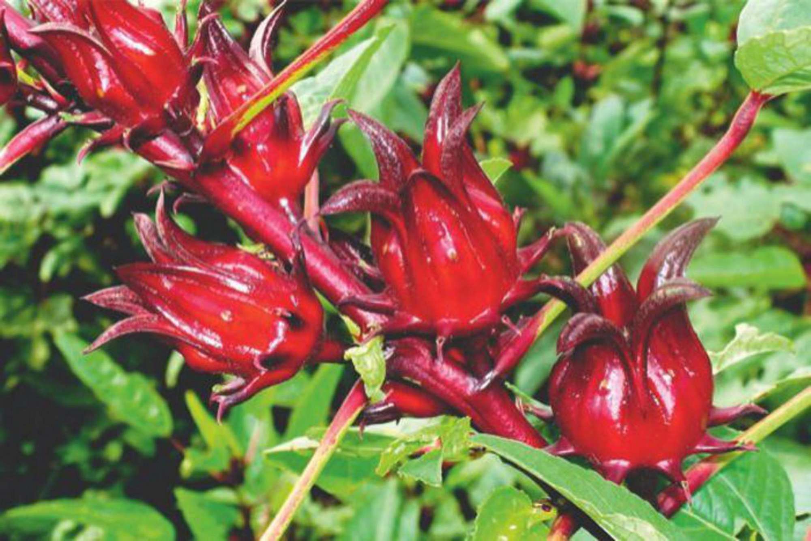
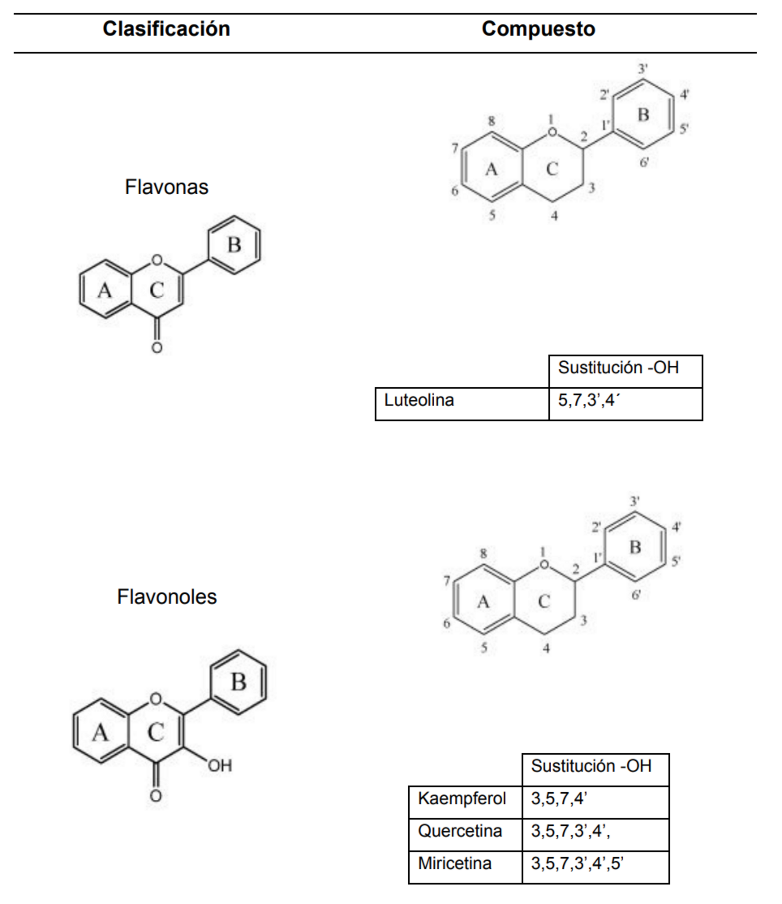
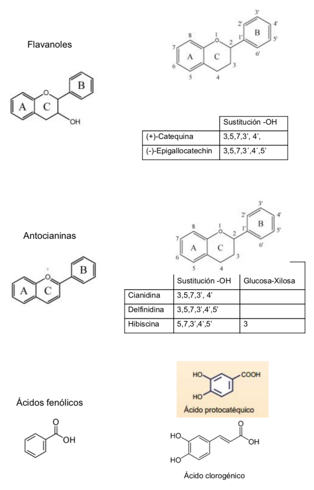
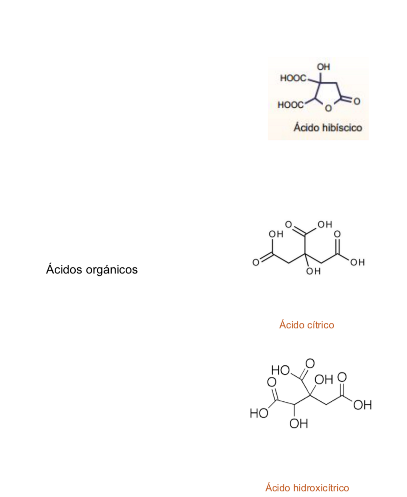

9 Flor de Jamaica
9.1 Hibiscus sabdariffa L.

Migdalia Sarahy Navidad Murrieta, Guadalupe del Carmen Perales Vázquez, Jorge A. Sánchez Burgos, Víctor M. Zamora Gasga y Sonia G. Sáyago Ayerdi
9.2 Características agronómicas
9.2.1 Taxonomía
La flor de Jamaica (Hibiscus sabdariffa), también conocida como Rosa de Jamaica o Rosa de Abisinia, pertenece a la familia de las malváceas y es originaria de África tropical, aunque se cultiva ampliamente en América central, América del sur y en el sudeste asiático (Ali et al., 2005), en la Cuadro 9.1 se presenta la clasificación taxonómica de la planta de flor de Jamaica.

| Reino | Plantae |
| Subreino | Tracheobionta |
| División | Anthophyta |
| Clase | Magnoliopsida |
| Orden | Malvales |
| Familia | Malvácea |
| Género | Hibiscus |
| Especie | Sabdariffa Linn |
La jamaica (Hibiscus sabdariffa L.) es una planta de siembra anual, erecta, arbustiva, cubierta de ramas, generalmente sus tallos pueden alcanzar hasta 2.4 m de alto (Carvajal et al., 2006). Sus hojas son verdes aserradas y agudas con venas rojizas y peciolos de 7.5 a 12.5 cm de longitud (Del Vaz-Diaz, 2009), sus flores son de un color amarillo con centro color rosa a rojo marrón que cambia a rosado a medida que llega la tarde hasta marchitarse (Meza-Chavarria, 2012); se sostienen por separado en la parte alterna de las hojas y pueden llegar a medir hasta 12.5 cm de largo y 4 cm de ancho; el cáliz típicamente de color rojo, consta de 4 a 5 pétalos; su cáliz crece hasta la madurez y el fruto se vuelve carnoso (Da-Costa-Rocha et al., 2014). La reproducción de la planta es por autofecundación, cada válvula contiene de 3 a 4 semillas afelpadas de color ligeramente café y en forma de riñón que miden de 3 a 4 mm de longitud. Cuando la cápsula está madura y seca, cambia a un color café rojizo y se separa (Carvajal et al., 2006).
9.2.2 Condiciones de cultivo
El cultivo de la Flor de Jamaica no posee requerimientos difíciles o poco convencionales, razón por la cual es una práctica económica que puede verse favorecida y podría adoptarse a gran escala en regiones colombianas donde aún no ha incursionado. El cultivo de Hibiscus sabdariffa se produce en un tiempo corto en comparación con otros cultivos, por lo cual la inversión puede recuperarse rápidamente y reinvertirse en los procesos de poscosecha y comercialización. A continuación se presenta el proceso de cultivo de la flor de Jamaica (Hibiscus sabdariffa) (Nichols-Posada, 2014):
| Proceso de cultivo de la flor de Jamaica Hibiscus sabdariffa | |
|---|---|
| Requerimientos climáticos | La Hibiscus sabdariffa puede ser cultivada en regiones con una altitud de 300 a 1000 msnm, de clima seco tropical o subtropical con una temperatura de 22° a 25°C y con un régimen pluvial de entre 400 a 500 mm por año (Cano, 2004). |
| Requerimientos del terreno | Esta malvácea se adapta bien a diferentes tipos de suelos y sustratos. Los suelos más recomendados son los ricos en materia orgánica de fertilidad media o moderada, drenados y húmedos con el fin de evitar que la planta crezca mucho y para que produzca más cálices (Urbina, 2009). La Hibiscus sabdariffa también puede ser cultivada en suelos arenosos dado a que desarrolla un sistema radicular largo y profundo. (Martínez, 1992). Las opiniones de los autores en torno al tipo de suelo recomendado para el cultivo de esta malvácea son diferentes. Según Meza es un cultivo con buena adaptación y se puede establecer en suelos aluviales, arcillosos, pedregosos, o franco arenosos (2012). De acuerdo con Arévalo, la Hibiscus sabdariffa requiere suelos franco arcillosos ya que no tolera los encharcamientos propios de los suelos pesados o arcillosos (2012). Por su parte, Cano recomienda que el suelo tenga un contenido de materia orgánica mayor del 2.5%, con un pH de 4.5 a 8.2, libre de sales y con una conductividad no mayor de 1.5 mΩ/cc (2004). De acuerdo con otros autores la flor de Jamaica prefiere suelos de color rojo, cálidos y de poca profundidad (Arévalo, 2012). En el cultivo de flor de Jamaica, según Meza, se necesitan suelos ácidos, con un pH óptimo de 6.5, y un rango de entre 4.5 y 7.5. La pendiente del terreno no debe ser mayor del 50% ni permanecer inundada por más de cinco días (facilitar drenaje). (Meza, 2012) Se recomienda evitar terrenos excesivamente ricos o la aplicación de abonos nitrogenados ya que ello tiende a producir plantas sumamente desarrolladas a expensas de la producción floral. |
| Diseño agroforestal | La Flor de Jamaica se puede asociar con otros cultivos con el fin de aprovechar el suelo. De acuerdo con la región, la Flor de Jamaica puede asociarse con cultivos de maíz, fríjol o especies forestales como madero negro (Gliricidia sepium), leucaena (Leucaena sp), laurel (Cordia alliodora), entre otras especies afines. Urbina recomienda una alineación de cada 15 m entre calles y 3 m entre plantas. Entre las calles se establecerá el cultivo de maíz/frijol y rosa de Jamaica, ubicando un promedio de 2 surcos de maíz/frijol y 9 surcos de rosa de Jamaica. Otra opción sería sembrar entre las calles de los árboles la rosa de Jamaica intercalada entre plantas de maíz, es decir, 130 cm entre surcos y 75 cm entre plantas, intercaladas maíz y rosa de Jamaica sucesivamente (2009). |
| Siembra | Se recomienda colocar entre tres y cinco semillas por golpe. La siembra puede ser directa o mediante trasplante y la germinación comienza luego de dos o tres días de enterrada la semilla. Debe hacerse una limpia del terreno. También es propicia la construcción de un semillero almácigo para cuidar las plantas en sus primeras fases para luego realizar el trasplante, con lo cual no sólo se ahorrará tiempo sino recursos. Hay que recordar, también que la semilla es muy pequeña y por esto le será difícil competir con las herbáceas y otras dificultades que se presentan en los suelos de la región andina colombiana (Nichols-Posada, 2014). El cultivo del semillero se realiza mediante semillas que deben sembrarse con una distancia de diez cm al cuadro enterrándolas con 1 cm de profundidad. El trasplante puede realizarse cuando las plantas alcanzan 10 cm de altura (Martínez, 1992). Actualmente, se manejan como semilleros las bandejas plásticas de plantular de 50, 72, 128, 172 y 200 alvéolos, en las cuales se individualizan las semillas y se emplea un sustrato como la turba u otros que garanticen la buena germinación y el desarrollo de la semilla. Cuando se trata de siembra directa se aconseja colocar de tres a cinco semillas por postura con una distancia de 90 cm entre plantas y 130 cm entre surcos. La cantidad de semillas para sembrar 0,70 ha es de tres libras (Urbina, 2009). |
| Fotoperiodo | La planta requiere de un fotoperiodo de doce horas luz. Durante el periodo de reproducción requiere de un periodo de oscuridad mínimo de 11.5 horas y para la época de floración un periodo de 12,5 a 13,5 horas luz por día (Cano, 2004). |
| Demanda de agua | Se recomienda la aplicación de riegos ligeros cada ocho días después del trasplante. La Hibiscus sabdariffa es una planta que exige hidratación durante el desarrollo vegetativo pero no tolera el encharcamiento ni la densidad poblacional que le reduzca la penetración de luz solar (Meza, 2012). |
| Floración | La Hibiscus sabdariffa comienza a florecer en tiempo semi-seco, alrededor de los 100 o 120 días de sembrada de forma definitiva. Cuando termina la floración se recomienda dejar 20-25 días para la formación y madurez del cáliz, es ahí cuando se puede cortar por primera vez (Nichols-Posada, 2014). |
9.2.3 Estacionalidad
De acuerdo con la literatura concerniente al manejo agronómico de la Hibiscus sabdariffa, en regiones áridas y semiáridas la siembra puede iniciarse en mayo o en junio para cosechar en octubre. Las fechas de secado de los cálices recolectados después de la cosecha coinciden con el cese de las lluvias y el advenimiento de las épocas de verano (Urbina, 2009). Para obtener plantas robustas, con abundantes ramas y mayor cantidad de frutos se recomienda seguir las fechas de siembra indicadas, ya que siembras tardías dan como resultado plantas pequeñas, de poco follaje y producción (Meza, 2012).
9.2.4 Plagas y enfermedades
La Jamaica (Hibiscus sabdariffa L.) como todos los cultivos es susceptible al ataque de factores bióticos como los insectos plaga y las enfermedades, que pueden ocasionar pérdidas que van desde daños por manchas hasta la destrucción completa del cultivo, frente a eso, es necesario tener una respuesta correcta en términos del uso de métodos de control y costos que respeten el medio ambiente, sean eficientes y permitan incrementar los márgenes de utilidad de los productores. Dada la importancia de este cultivo emergente, se hace prioritario conocer las especies de insectos plaga y las enfermedades que limitan la producción del cultivo de flor de la Jamaica.
9.2.4.1 Principales plagas de la Jamaica
Las plaas constituyen la dieta alimenticia de la mayoría de las especies de insectos, por lo tanto los insectos son las plagas más importantes de las plantas cultivadas (Davis, 1991). Morton (1987) reporta a tres escarabajos Nisotra breweri, Lagris cyanea y Rhyparida discopunctulata atacando las hojas de la Jamaica, también menciona como plagas de menor importancia a las escamas Coccus hesperidum y Hemichionapis aspidistrae en tallos y ramas, al pulgón amarillo Aphis gossypii, sobre las hojas y brotes florales y a la chinche manchadora Dysdercus suturellus en los cálices. McCaleb (2000) menciona que el daño hecho por los insectos a la Jamaica es menor pero existe y reporta a la pulga saltona Podagrica spp., a la palomilla Abutilon sp., al gusano bellotero del algodón y al gusano trozador, mientras que de Hemiptera registra a la chinche manchadora, a las escamas y chicharritas. McClintock y El Tahir (2004) reportan que la presión de plagas es alta, con presencia de larvas del gusano bellotero (Earias biplaza y Earias insulana) atacando frutos; larvas de pulga saltona (Podagrica spp.) alimentándose de raíces y los adultos de las hojas y puntos de crecimiento; presencia de chinche manchadora (Dysdercus supertitiosus) chupando cálices y causando manchas color café y la infestación del barrenador espiral (Agrilus acutus). Abdel-Moniem y El-Wahab (2006) reportan que las plagas más dominantes encontradas en el cultivo de Jamaica fueron los insectos chupadores Empoasca spp., Maconellicoccus hirsutus, Aphis gossypii glover, Bemisia tabaci, Oxycarenus hyalinipennis y el gusano bellotero Earias insulana. Duke (1983) registra que entre los insectos plaga que atacan a la Jamaica están: Anomis erosa, Chaetocnema spp., Cosmophila erosa, Dysdercus cingulatus, D. poecilus, Drosicha townsendi, Nistora gemella, Phenacoccus hirsutus, Pseudococcus filamentous y Tectocoris diophthalmus.
En México el Comité Estatal de Sanidad Vegetal de Puebla (2006) reporta que el cultivo de Jamaica tiene pocos enemigos naturales, es resistente a las plagas y a la falta de agua, sin embargo cuando no se lleva un manejo adecuado del cultivo los aspectos fitosanitarios repercuten significativamente al incrementar los costos de producción y mermar la calidad de estos productos, menciona a la gallina ciega Phyllophaga spp., la hormiga arriera Atta mexicana y a la cochinilla rosada Maconellicoccus hirsutus, como las principales plagas de la Jamaica. Mientras que Castillo solano (2007) agrega al complejo de hormiga arriera Atta tejana y Atta cephalotes, además menciona como las principales plagas que afectan al cultivo de la Jamaica al pulgón, los trips, el gusano soldado, el falso medidor, los mayates y sus larvas.
9.2.4.2 Principales enfermedades de la Jamaica
Las enfermedades son alteraciones que se producen en las plantas por desequilibrios fisiológicos causados por factores bióticos como hongos, bacterias, fitoplasmas, virus, viroides, nematodos, plantas parásitas, protozoarios y factores abióticos. Las enfermedades más importantes de la Jamaica son formas de pudrición de cuello, raíces y de tallos como, Phytophtora parasitica, Macrophomina phaesolina, Rhizoctonia solani, Botrytis cinerea y Scleotium rolfsii así como las manchas foliares de Phoma sabdariffae; menos frecuente es la antracnosis ocasionada por diferentes tipos de hongos. La mayoría de las podredumbres de tallos y raíces son debido a encharcamientos de agua o a periodos prolongados de precipitación pluvial. Por otro lado, suelos empobrecidos y rotaciones muy estrechas con el mismo cultivo pueden incentivar la infección (Naturland 2000). La Jamaica es susceptible a la infección por Coniella musaiaenis var. Hibisci, que causa las manchas de la hoja y la senescencia de la planta y el cáliz; la mancha de la hoja causada por Cercospora hibisci y la cenicilla de la hoja causada por Oidium abelmoschi son comunes.
En México, el Comité Estatal de Sanidad Vegetal de Puebla (2006) reporta que las enfermedades más importantes de tallos, hojas y raíces de la Jamaica son las siguientes: Fusarium oxysporum, F. roseum, Rhizoctonia solani, Sclerotium rolfsii, y Pseudomona sp., principalmente. Sin embargo se han observado otras enfermedades que no han llegado a repercutir significativamente como: Phytophtora parasitica, Phoma sabdariffae, Macrophomina phaseolina, Phyllosticta spp., Botrytis cinerea, Puccinia spp. y Oidium spp.
| Especie | Nombre común | Daños |
|---|---|---|
| Chaetocnema spp. | Pulga saltona | Adultos perforando hojas y brotes |
| Podagrica spp | Pulga saltona | Larva alimentándose de raíces Adultos comiendo hojas y brotes |
| Phyllophaga spp | Gallina ciega | Ataca raíces de la Jamaica |
| Bemisia tabaci | Mosquita blanca | Chupado de hojas |
| Aphis gossypii Glover | Pulgón amarillo | Sobre las hojas y brotes florales |
| Empoasca sp. | Chicharritas | Succionado de tallos y hojas |
| Coccus hesperidum Linnaeus | Escama | En tallos y ramas |
| Hemichionaspis aspidistrae | Escama | En tallos y ramas |
| Dysdercus cingulatus | Chinche manchadora | Chupando cálices y causando manchas |
| Atta cephalotes Atta mexicana Atta tejana | Hormiga arriera | Cortando hojas |
| Earias insulana | Gusano bellotero | Atacando frutos |
| Trips sp | Trips | Raspando brotes nuevos y flores |
9.3 Características nutricionales
9.3.1 Composición nutricional de cálices
La composición proximal en cálices de Jamaica puede variar dependiendo de la variedad, tipo de suelo en el que son cultivados y factores climatéricos, por lo que los valores reportados por diversos artículos no son del todo similares, lo que hace necesario caracterizar analíticamente los cálices a utilizar en cada experimentación (Sáyago-Ayerdi y Goñi, 2010).
En investigaciones anteriores, se reportan variaciones en la composición de los cálices de Jamaica (Babalola et al., 2001; Sáyago-Ayerdi et al., 2007; Mahadevan, 2009). En el Cuadro 9.4, se presenta una comparación de los datos reportados, mostrándose una apreciable concentración de proteína y principalmente fibra dietética. Los minerales potasio y calcio son lo que se encuentran en mayor concentración en esta categoría, seguido de hierro y magnesio (Babalola et al., 2001). En la categoría de vitaminas, se encuentran presentes vitaminas como tiamina, niacina y principalmente vitamina C (Mahadevan, 2009).
| Nutriente | Nutriente | Babalola et al., 2001 | Sáyago-Ayerdi et al., 2007 | Mahadevan, 2009 | Mahadevan, 2009 |
|---|---|---|---|---|---|
| Proteína (a) | Proteína (a) | 8.6 | 9.87 | 9.2 | 9.2 |
| Lípidos | Lípidos | 2.9 | 0.59 | 2.61 | 2.61 |
| Cenizas | Cenizas | 6.8 | 9.75 | 6.9 | 6.9 |
| Fibra dietética total (b) | Fibra dietética total (b) |
|
33.9 | 39.5 - 42.6 | 39.5 - 42.6 |
| Fibra insoluble | Fibra insoluble |
|
29.04 |
|
|
| Fibra soluble | Fibra soluble |
|
4.9 |
|
|
| Calcio | Calcio | 1602 |
|
12.63 | 12.63 |
| Potasio | Potasio | 2320 |
|
|
|
| Hierro | Hierro | 34.6 |
|
8.98 | 8.98 |
| Magnesio | Magnesio | 340 |
|
|
|
| Zinc | Zinc | 6.3 |
|
|
|
| Ácido ascórbico | Ácido ascórbico | 54.8 |
|
6.7 | |
| Niacina | Niacina |
|
|
3.765 | 3.765 |
| Tiamina | Tiamina |
|
|
0.117 | 0.117 |
| Riboflavina | Riboflavina |
|
|
0.277 | 0.277 |
| (a) N x 6.25; (b) Método AOAC, 2000 |
Los cálices de Jamaica han sido considerados como una fuente saludable de fibra antioxidante. La fibra antioxidante puede ser entendida como un compuesto en el que se combinan un porcentaje elevado de fibra dietética y cantidades apreciables de antioxidantes naturales asociados a una matriz de compuestos no digeribles. De acuerdo con Sáyago-Ayerdi y Goñi (2010) la fibra de la flor o cálices de Jamaica contribuyen a la salud gastrointestinal y disminuyen el riesgo de aparición de enfermedades cardiovasculares y de diferentes tipos de cáncer.
9.3.2 Composición nutricional de hojas y semillas
Las hojas y las semillas de la Hibiscus sabdariffa han sido estudiadas, mostrando efectos benéficos como la infusión de las hojas de esta planta para la digestión, como tónico emoliente para eccemas e inflamaciones, para combatir los parásitos intestinales y se afirma que éstas son buena fuente de compuestos nutritivos y, poseen, al igual que los cálices, un amplio rango de acciones curativas y preventivas como antihipercolesterolemiante, antihiperlipidemiante, hipotensivo, entre otras (Kumar et al., 2012). En el Cuadro 9.5, es presentada la composición química en términos de ausencia (-) / presencia (+) de compuestos en los extractos de hoja de Jamaica.
| Extracto acuoso | Extracto en etanol al 95% | Fracción en etanoato de etilo | |
|---|---|---|---|
| Carbohidratos |
|
|
|
| Proteínas |
|
|
|
| Aminoácidos |
|
|
|
| Glucósidos |
|
|
|
| Esteroides y esteroles |
|
|
|
| Alcaloides |
|
|
|
| Flavonoides |
|
|
|
| Taninos y otros fenoles |
|
|
|
| Antraquinones |
|
|
|
| Triterpenoides |
|
|
|
| Análisis de saponinas |
|
|
|
| Fuente: Kumar et al., 2012. |
Con respecto a la composición química de las semillas de Jamaica, Cisse et al., afirman que éstas poseen concentraciones relevantes de proteínas, lípidos y azúcares totales (2009) (Cuadro 9.6). Diversos estudios han demostrado que la semilla de esta planta presenta una composición, incluso, más diversa que la de los cálices puesto que además de compuestos fenólicos contiene fitosteroles, tocoferoles, diversos aminoácidos entre los que se destacan el ácido glutámico, la glicina y el ácido aspártico, minerales esenciales y otros compuestos que le otorgan una actividad antioxidante y recolectora de radicales libres. En un estudio se encontró que las semillas también poseen una gran actividad antioxidante similar a la de los cálices dado a su contenido considerable de compuestos fenólicos y que, además, tienen un gran valor nutricional porque son buena fuente de antioxidantes liposolubles, por lo cual podrían considerarse como alimento funcional (Mohd-Esa et al., 2010). Finalmente, las semillas de Jamaica poseen grandes propiedades nutricionales debido a que son ricas en un aceite de color amarillo verdoso y contienen fibra dietaria soluble (pectina) e insoluble (Sáyago-Ayerdi et al., 2010)
| Nutriente | Semillas | Follaje |
|---|---|---|
| Proteína (g) | 28.9 | 3.5 |
| Carbohidratos (g) | 25.5 | 8.7 |
| Grasas (g) | 21.4 | 0.3 |
| Vitamina A (U.I.) |
|
1000.0 |
| Tiamina (mg) | 0.1 | 0.2 |
| Riboflavina (mg) | 0.15 | 0.5 |
| Niacina (mg) | 1.5 | 1.4 |
| Vitamina C (mg) |
|
2.3 |
| Calcio (mg) | 350 | 240.0 |
| Hierro (mg) |
|
5.0 |
| Asociación Naturalan, 2004 |
9.3.3 Productos alimenticios (tallos, hojas, semillas y cálices)
En México el cultivo de la Jamaica (Hibiscus sabdariffa L) fue introducido desde la época colonial, donde tradicionalmente los cálices secos han sido utilizados en la preparación de bebidas o infusiones (Castro, 2002). En países del Caribe se utilizan los cálices frescos para la preparación de una bebida durante la época de Navidad (Vaidya, 2000) y en Egipto se utilizan para preparar una bebida refrescante ácida conocida como karkadé (Mohamed et al., 2007). Recientemente, se han utilizado en procesos industriales como materia prima o como ingredientes para la elaboración de mermeladas, gelatinas, jarabes, bebidas, budines, pasteles, vinos y como colorante natural (Christian et al., 2006; Bengaly et al., 2006).
9.3.4 Propiedades funcionales
Los compuestos bioactivos (CB) son componentes minoritarios de los alimentos, considerados no nutrientes, parcialmente biodisponibles en el organismo y que han demostrado tener efectos positivos para la salud de quienes les consumen, ejemplo de ellos son los polifenoles, carotenoides y fitoesteroles (Sáyago-Ayerdi y Goñi, 2010). Dentro de los CB en la jamaica se han identificado fitoestrógenos, y compuestos fenólicos (CF) los cuales son metabolitos secundarios involucrados en la defensa de plantas frente a la radiación ultravioleta y el ataque de patógenos (Williamson y Manach, 2005).
De acuerdo a diversas investigaciones publicadas, en la Cuadro 9.7 se presentan los compuestos fenólicos presentes en extractos de Jamaica incluyendo los compuestos derivados naturalmente como el ácido hibísico, hibiscetina e hibiscetrina.
|  |
|  |
|  |
Fuente: Ali et al., 2005; Borrás-Linares et al., 2015; De la Rosa et al., 2009
9.3.5 Propiedades terapéuticas y farmacológicas
Varios estudios reportan propiedades terapéuticas de los extractos de Jamaica, especialmente aquellas relacionadas con la prevención de enfermedades cardiovasculares e hipertensión, hiperlipidemias, obesidad, efecto diurético, protección contra hepatotoxicidad y propiedades quimioprotectoras.
| Propiedades Terapéuticas | Mecanismo o efecto | Referencia |
|---|---|---|
| Inhibición ciclo-oxigenasa | Christian et al., 2006 | |
| Antihipertensivo | Vasodilatación ruta óxido nítrico/GMPc o flujo de Ca2+ | Ajay et al., 2007 |
| Inhibición de ACE I | Herrera et al., 2004 | |
| Inhibición de oxidación LDL y arteriosclerosis | Chang et al., 2006 Liu et al., 2002 | |
| Control de hiperlipidemias y obesidad | Reducción del nivel sérico de lípidos (Triacilglicéridos, colesterol y LDL) | Chen et al., 2003 Wang, 2003 Tee et al., 2002 Carvajal et al., 2005 Hirunpanich et al., 2006 |
| Inhibición en la diferenciación de adipocitos | Kim et al., 2003 Dickel et al., 2007 | |
| Absorción del colesterol | Atta e Imaizumi, 2002 | |
| Herbolaria tradicional | Wright et al., 2007 Kirdpon et al., 1994 | |
| Efecto diurético | Tipo electrolítico | Marquez et al., 2007 Herrera y Arellano., 2007 |
| Uricosúrico | Prasongwatana et al., 2008 | |
| Inducida por cadmio y ter-butil hidroperóxido | Tseng et al., 1997 | |
| Inducida por paracetamol | Ali et al., 2003 | |
| Protección contra hepatotoxicidad | Lipoperoxidación | Asagaba et al., 2007 |
| Inducida por azatioprina | Amin y Hamza, 2005 | |
| Inducida por tetracloruro de carbono | Liu et al., 2006 | |
| Citotoxicidad por apoptosis en células del carcinoma gástrico | Liu et al., 2007 | |
| Quimiopreventivo | Inhibición de tumores en piel | Tseng y Lee, 2006 |
| Apoptosis en células leucémicas humanas | Hou et al., 2005 Lin et al., 2005 Chang et al., 2005 | |
| ACE= Enzima que convierte la angiotensina I; LDL= Lipoproteínas de muy baja densidad |
9.4 Referencias
Ali, B. H., Wabel, N. A., y Blunden, G. (2005). Phytochemical, pharmacological and toxicological aspects of Hibiscus sabdariffa L.: a review. Phytotherapy research, 19(5), 369-375.
Arévalo Cea, J. (2012). Propuesta de un extracto colorante a partir de Hibiscus sabdariffa (Flor de Jamaica) para ser utilizado en la industria textil. Tesis de licenciatura. Universidad del Salvador, San Salvador.
Babalola, S. O., Babalola, A. O., y Aworh, O. C. (2001). Compositional attributes of the calyces of roselle (Hibiscus sabdariffa L.). The Journal of Food Technology in Africa, 6(4), 133-134.
Borrás-Linares, I., Fernández-Arroyo, S., Arráez-Roman, D., Palmeros-Suárez, P. A., Del Val-Díaz, R., Andrade-Gonzales, I., Fernández-Gutiérrez, A., Gómez-Leyva J. F. y Segura-Carretero, A. (2015). Characterization of phenolic compounds, anthocyanidin, antioxidant and antimicrobial activity of 25 varieties of Mexican Roselle (Hibiscus sabdariffa). Industrial Crops and Products, 69, 385-394.
Cano Zepeda, J. (2004). El cultivo de jamaica orgánica (Hibiscus sabdariffa) en México. Agroproductos y servicios orgánicos de Uruapan, Michoacán.
Carvajal, O., Waliszewski, S., e Infanzón, R. M. (2006). Los usos y maravillas de la Jamaica. La Ciencia y el Hombre (México), 19(2), 37-40.
Cid Ortega, S., y Guerrero Beltrán, J. A. (2012). Propiedades funcionales de la Jamaica (Hibiscus Sabdariffa L.). Temas Selectos de Ingeniería en Alimentos, 6(2), 47-63.
Cisse, M., Dornier, M., Sakho, M., Ndiaye, A., Reyne, M., Sock, O., (2009). Le bissap (Hibiscus sabdariffa L.) : composition et principales. En: Fruits. Vol. 64 (3). Pág. 179-193.
Da-Costa-Rocha, I., Bonnlaender, B., Sievers, H., Pischel, I., y Heinrich, M. (2014). Hibiscus sabdariffa L. A phytochemical and pharmacological review. Food chemistry, 165, 424-443.
De la Rosa L., A., Alvarez-Parrilla, E., y González-Aguilar, G. A. (Eds.). (2009). Fruit and vegetable phytochemicals: chemistry, nutritional value and stability. John Wiley & Sons.
Del Vaz-Díaz, R. López-Muraira, I., Gómez-Leyva, J. 2009. Variedades de Jamaica (Hibiscus sabdariffa L.) cultivadas en México. En Jamaica Avances Científicos y Tecnológicos del Cultivo de la Jamaica F. Gómez-Leyva, López-Muraira, I., Andrade-González, I. (Ed.), Jalisco, México. pp.:9-16
Kumar, Manish; Garg, Rajneesh y Garg, Rakesh. (2012). Phytochemical properties and antioxidant activity of Hibiscus Sabdariffa Linn. En: International journal of pharmaceutical and chemical sciences.Vol.1(3).Págs.887-891.
Mahadevan, N., y Kamboj, P. (2009). Hibiscus sabdariffa Linn.–An overview. Natural Product Radiance, 8 (1), 77-83.
Martínez, E. (1992). Diagnóstico de la situación actual del cultivo de la rosa de Jamaica (Hibiscus sabdariffa L.), en los municipios de Granados, El Chol y Salama del departamento de Baja Verapaz. Tesis de licenciatura. Universidad de San Carlos de Guatemala, Guatemala.
Meza-Chavarría, P. (2012). Guía: flor de Jamaica (Hibiscus sabdariffa L) e (Hibiscus cruentus Bertol). Asociación para el Desarrollo Eco-Sostenible (ADEES). Chinandega, Nicaragua.
Mohd-Esa, N; Shin, F; Ismail, A y Lye, C. (2010). Antioxidant activity in different parts of roselle (Hibiscus Sabdariffa L.) extracts and potential exploitation of the seeds. En Food Chemistry.Vol.122(10). Págs.1055-1060.
Nicholls Posada, J. E., y Ramírez García, J. A. (2014). Usos y aplicaciones medicinales e industriales de la flor de Jamaica.
Sáyago-Ayerdi, S. G., Arranz, S., Serrano, J., y Goñi, I. (2007). Dietary fiber content and associated antioxidant compounds in roselle flower (Hibiscus sabdariffa L.) beverage. Journal of Agricultural and Food Chemistry, 55(19), 7886-7890.
Sáyago-Ayerdi, S. G., Goñi, I (2010). Hibiscus sabdariffa L: Fuente de fibra antioxidante. Archivos latinoamericanos de nutrición, 60(1), 79-84.
Urbina Torres, F. (2009). Cultivo de Flor de Jamaica. Cultivo de Flor de Jamaica (Hibiscus sabdariffa) e (Hibiscus Cruentus Bertol). Proyecto de desarrollo de la cadena de valor y conglomerado agrícola. Nicaragua.
Williamson, G., y Manach, C. (2005). Bioavailability and bioefficacy of polyphenols in humans. II. Review of 93 intervention studies. The American journal of clinical nutrition, 81(1), 243S-255S.